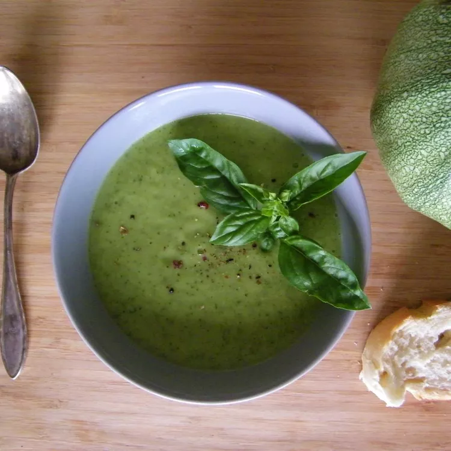

Salsa Chicken
Home

Description
Taco seasoning mix along with salsa adds flavor to this simple chicken recipe. Recipe creator Faye says you can
use any salsa you like: mild, medium, or hot, adding: "I usually serve it with Spanish rice and Mexican-style
canned corn. Very easy and quick!"
Ingredients
- 21 ounces zucchini, sliced
- 2 onions, chopped
- 2 cloves garlic, crushed
- 3 cups water, divided
- salt to taste
- 1 bunch chives, chopped
Steps
- Combine zucchini, onions, garlic, and 2 tablespoons water in a non-stick pan over medium heat; cook until zucchini are softened, 5 to 10 minutes. Add remaining water and bring to a boil. Reduce heat and simmer for 5 minutes. Remove from heat and cool.
- Pour zucchini mixture into a food processor no more than half full. Cover and pulse a few times before leaving on to blend. Puree in batches until smooth. Season soup with salt and garnish with chives.